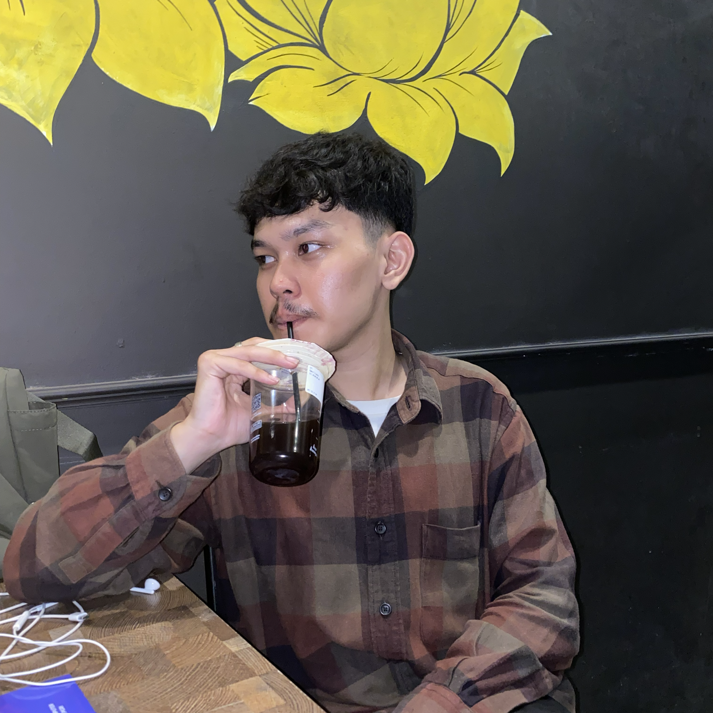
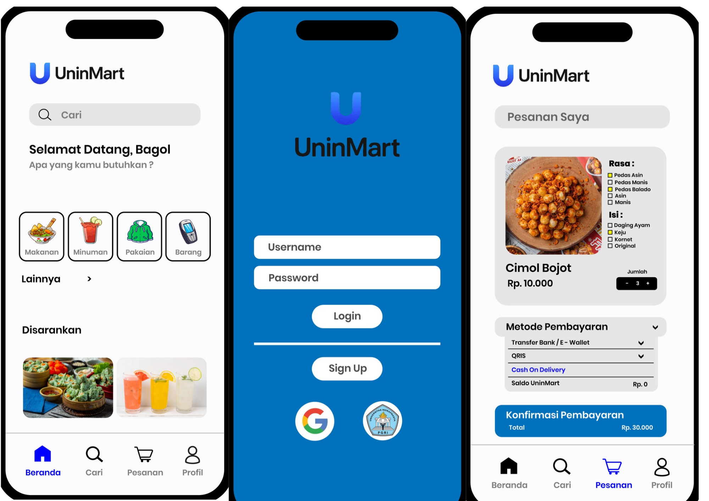

Hai, Saya Muhammad Fakhri Fadhlurahman
- HTML
- CSS
- JavaScript

Halo! saya Muhammad fakhri Fadhlurahman, mahasiswa semester 5 Teknik Informatika di Universitas Indraprasta PGRI (unindra). Saat ini saya lagi seru-serunya mendalami Front-End Web Development mulai dari menyusun struktur-struktur pakai HTML, eksperimen desain di CSS, sampai belajar dasar UI/UX. ke depannya, saya tidak bakal berhenti di tampilan luar website saja. Target saya selanjutnya adalah belajar JavaScript dan sisi Back-End buat mengejar impian untuk menjadi seorang Full-Stack Developer.

UninMart adalah project desain UI (User Interface) aplikasi marketplace yang idenya dibikin khusus buat anak-anak kampus Unindra. Lewat prototipe ini, saya merancang alur aplikasinya dari awal—mulai dari halaman login, etalase kategori jajanan/produk, sampai ke halaman checkout pembayaran. Fokus utama desain ini adalah bikin tampilan yang clean, simpel, dan pastinya gampang dipakai.
Lihat Demo
Ini adalah sebuah sistem manajemen karyawan internal berbasis web yang fungsinya khusus untuk mengelola data kehadiran (absensi), pengajuan cuti, dan informasi staf/karyawan di lingkungan IDN Boarding School.
Lihat Demo